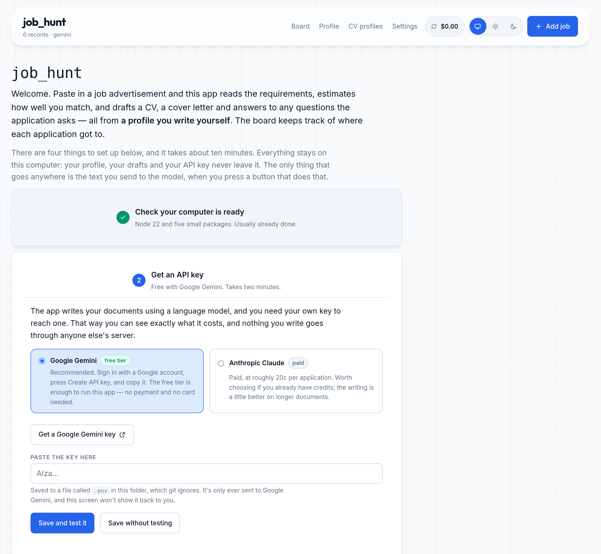
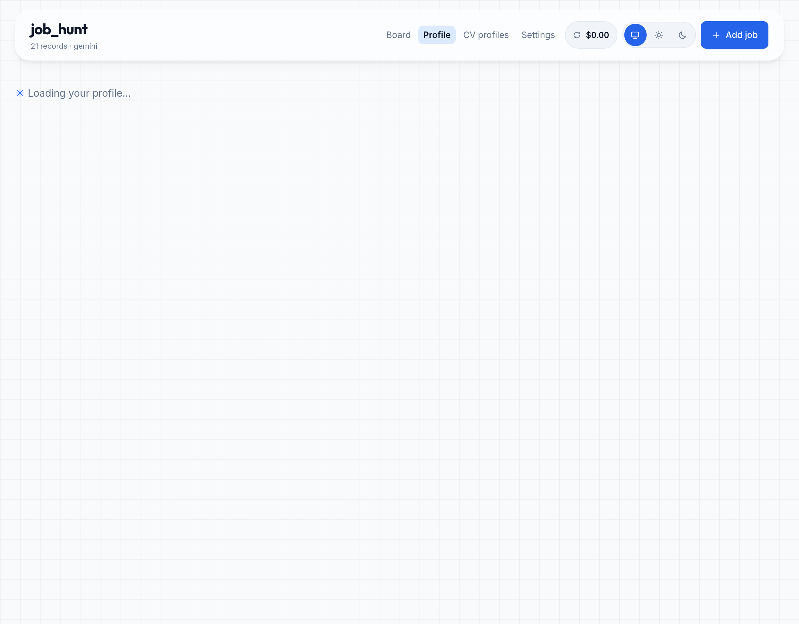
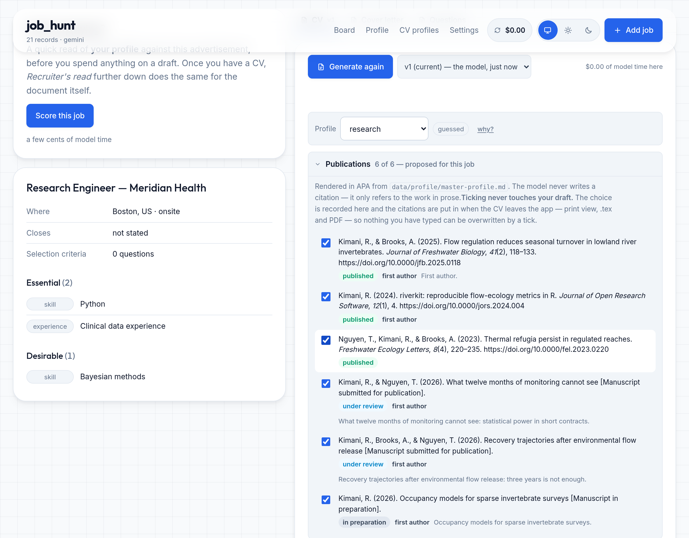
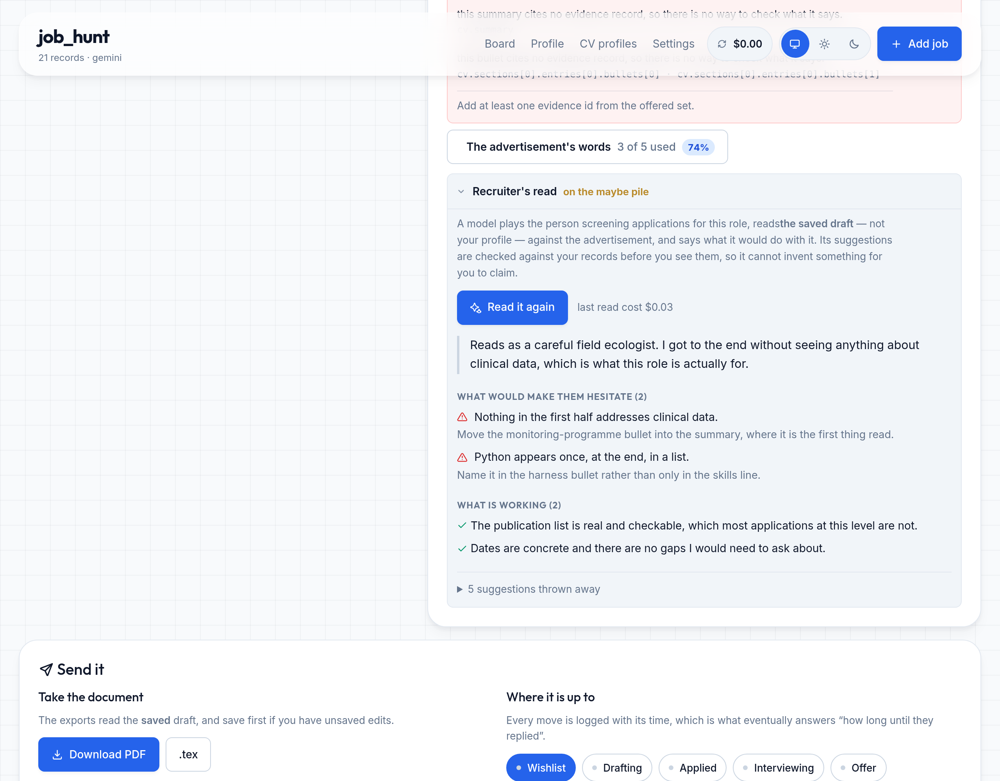

Free to run on Gemini's free tier
job_hunt
A job application assistant that runs on your own computer. You paste in a job advertisement; it reads the requirements, estimates how well you match, and drafts a CV, a cover letter and answers to any questions the application asks. You edit the drafts, export a PDF, and a board keeps track of where each application got to.
Your profile, your drafts and your API key stay on your machine. The only thing that leaves it is the text sent to the language model, when you press a button that does that.
How it works
You write a master profile: one file listing your education, jobs, projects, publications and skills. Everything the app writes comes from that file, and nothing else.
When it drafts a CV, each bullet point records which parts of your profile it came from. A checker then reads the draft and flags anything that doesn't add up — a bullet with no source, a number that appears in none of the records it cites, or a claim about a qualification your profile says is still in progress.
The checker is ordinary code rather than another language model, and it doesn't change your document. It shows you what it found and you decide what to do about it.
What that looks like in practice:
role-analyst). If the number is
real, add it to that record; if it isn't, remove it.
awarded: false. Allowed wordings: "PhD
candidate" or "PhD, expected submission March 2027".
Publications are handled separately. They're read from your profile and formatted in APA by the app itself, so a year or a journal name can't get altered along the way.
A recruiter's read of the document you're actually sending
The checks above tell you whether the draft is honest. This tells you whether it's any good. A model plays the person screening applications for the role, reads the draft you're about to send — not your profile — against the advertisement, and says what it would do with it.
You get what a screener notices first, and two kinds of suggested change:
Every suggestion is checked against your own records before you see it. A term the advertisement never used, or one pointing at a record that doesn't exist, is thrown away — and shown to you as thrown away, with the reason. A review that quietly invented a qualification for you to "work in" would undo the entire point of the app.
Two more things worth knowing about
It can name your visa route, per country
An employer advertising in the US will read "open to relocation" as "needs sponsorship" and often stop there. But an Australian applying for that same job can use the E-3 visa, which has no lottery and only needs a one-page form from the employer. Saying so plainly can be the difference between getting read and getting filtered out.
So the last line of your CV header comes from a table you fill in, with a different line per country. Countries you haven't listed use your general relocation phrase.
Read what you write here before you send anything. Whatever you type is printed on your CV word for word, as a statement you're making about yourself, and the app doesn't check any of it. It doesn't know which schemes exist, what their age limits are, or whether they're open this year. Delete anything you're not actually eligible for. The example routes belong to a fictional person and are there to show the format.
It shows you the advertisement's own words
Most applications are searched for keywords before a person reads them. A CV describing exactly the right work in different words — "measurement instruments" where the ad says "evaluations" — can score nothing on the term that counted.
So the app pulls out the terms from the advertisement, puts the ones marked essential first, and ticks off the ones your draft already uses. Where a bullet describes work you genuinely did, using the advertisement's word for it costs nothing. Where you haven't done the thing, leave the term unticked — that's what the list is for.
The chat can't rewrite your draft unless you let it
You can ask questions about a draft in a panel beside it — why it says something, what a line claims, whether anything in it isn't backed by one of your records. It starts in Ask, which answers and nothing else. If the model returns a rewrite anyway, the app throws it away and tells you it did.
Edit is the other button, and it's one click away. That one rewrites the document and saves it as a new version, with the one before it still there. The two are separate because "why does the summary lead with the PhD?" is a question, and a chat that answered it by replacing an hour of your editing is a chat you'd stop using.
Models rewrite anyway, and they describe it as done — "I have updated the skills section to…". So the rewrite is offered rather than binned, with a button that applies it, and the reply above it is labelled as describing something that hasn't happened.
Highlight a passage before you ask and you can quote it, so the question is about that paragraph rather than the whole CV.
Your profile opens next to the draft
The question you actually have while reading a draft is "what have I got that this leaves out?" So your records open in a panel on the left, opposite the chat, and both can be open at once — your profile on one side, the model on the other, the CV in between.
Each record is marked according to whether the draft already mentions it, and a Not used filter shows only the ones it doesn't. Any of them can be dropped into the draft in the record's own words. The mark is matched on titles and organisations, so it's a prompt to look rather than proof.
Nothing you delete is really deleted
Delete moves an application to a bin. Restore puts it back where it was, with every draft and every earlier version exactly as they were. Permanent deletion exists, but it lives in the bin as a separate step. Your edits are saved as new versions too, never over the top — the app is built on the assumption that losing your work is the worst thing it could do.
Every version can be read as a diff — the usual green pluses and red minuses, with the unchanged parts collapsed so a one-sentence edit reads as one sentence. That works either way round: what this version changed, or what would change if you restored it.
What it looks like




You don't have to type your profile out
Upload your CV as a PDF — a LinkedIn Save to PDF export works — or paste the text in. It comes back as records, each shown next to the part of the document it came from, and nothing is saved until you tick it.
That review matters: these records are what every future CV draws on, so a mistake here follows you around. There's also a Load a worked example button if you'd rather click through the whole app first.
And a button that tightens the wording
Records written in a hurry read like notes. Tighten the wording reads them back and suggests clearer versions — outcome first, less filler.
Every suggestion is checked before you see it. A rewrite is rejected if it adds a figure your record doesn't contain, drops one that it does, or grows by more than half:
Rejected suggestions are still shown, with the reason. They tend to be useful: usually a sign the underlying record is missing something you could add yourself. Where a record is genuinely thin, you get questions rather than padding — "how many sites?", "what did the error rate drop to?"
Installing it
There's nothing to sign up for and no account to make. It's a small Node program that runs on your computer and serves a page to your own browser. About ten minutes, once.
-
Install Node 22
Check what you have with
node --version. If it's older than v22, get the LTS version from nodejs.org. -
Download the code
git clone https://github.com/kbandara/jobhunt.git cd jobhunt npm installFive small packages, and no build step.
-
Start it
npm startThen open
http://127.0.0.1:4477in your browser. Leave that terminal window open — closing it stops the app. -
Follow the first screen
It walks you through getting an API key (with a link to the page that issues a free one), your contact details, and your profile.
If anything goes wrong,
npm run doctorchecks everything in one go and tells you how to fix whatever it finds.
Common questions
Does anything I write get sent anywhere?
Your profile, drafts, job list and API key are files on your own disk and are never uploaded. The app only accepts connections from your own computer, so nothing else on your network can reach it.
What does get sent is what you'd expect: when you press Read the ad, Score or Generate, the advertisement and the relevant records go to whichever model provider you set up. Nothing is sent without a button press.
What does it cost?
Nothing on Google Gemini's free tier, which is the default and what the setup
screen suggests. On Anthropic it's roughly 20c per application. Either way
the running total is in the app header, and every call is recorded with its
token counts in data/usage/ledger.jsonl.
Can I use it on my phone, or without installing anything?
No — it needs to run on a computer. There's no hosted version, which is deliberate: a hosted version would mean somebody else's server holding your phone number, your citizenship and every job you've had.
I'm not technical. Is this beyond me?
The install is three commands you copy and paste, once. Everything after that happens in your browser.
If a step doesn't work, npm run doctor checks Node, the
packages, your API key, whether the model names are still valid and whether
your profile is readable, then prints a list with a suggested fix under
anything that's wrong.
Can it read my CV, or do I type everything in?
Upload it. A PDF — including a LinkedIn Save to PDF export — or a text file, or pasted text. The PDF is read on your own computer; only the extracted text goes to the model, and only when you press the button.
Some PDFs store their fonts in a way that can't be read back. When that happens the app tells you and points you at the paste box instead.
Will it write my whole application for me?
It writes a first draft based on what you've actually done, and tells you everywhere it's unsure. It's a starting point — the app assumes you'll edit it, so your version is saved alongside the model's and every version is recoverable.
What if my field is nothing like the examples?
The categories are yours to set. You choose the labels for what each record is evidence of, which sections a CV runs in, and you can add a new CV profile by describing the kind of role in a sentence. The seven included ones — research, teaching, data science, industry, industry research, public sector and general — are just a starting point.